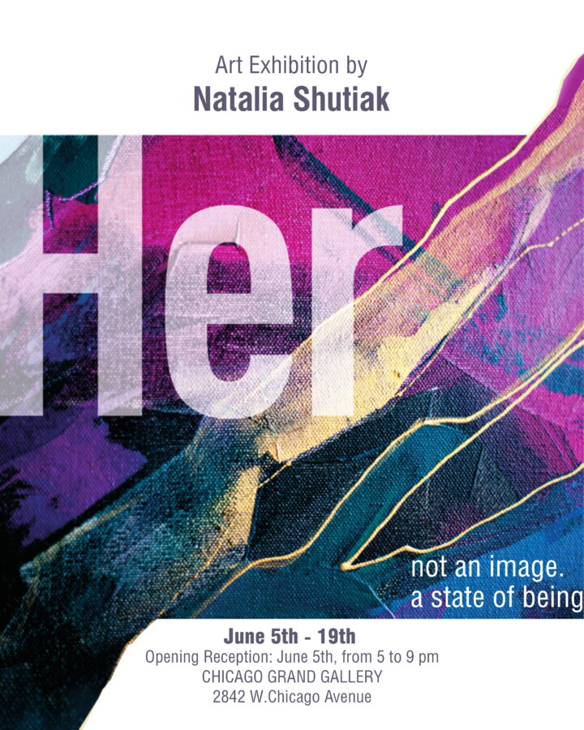

Her
Chicago Grand Gallery presents a solo exhibition by
Natalia Shutiak
HER
Her explores the unstable terrain of memory, sensation, and inner perception. Moving between figuration and abstraction, the exhibition unfolds as a psychological landscape where identity becomes fluid, fragmented, and constantly shifting.
Through layered textures, gesture, and atmosphere, Natalia Shutiak constructs works that resist fixed interpretation. Rather than presenting “her” as an image, the exhibition approaches femininity as a state of becoming — intimate, unresolved, and deeply felt.
Opening Reception
June 5, 2026 · 5–9 PM